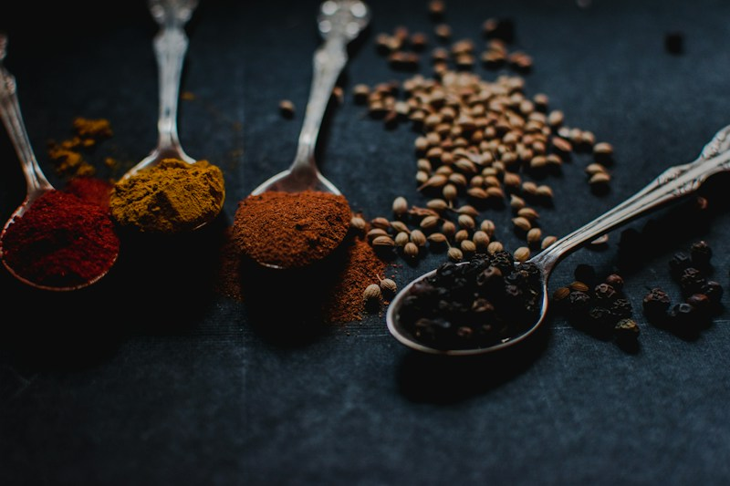

HOW IT ALL BEGAN
Rooted in Tradition.
Rooted in Tradition.
Made for Today.


Authentic Ingredients
Tea has always been more than a drink. It brings people together, creates moments of comfort, and makes everyday conversations special. Inspired by this simple belief, Tea House was created to celebrate the familiar warmth of chai through thoughtfully prepared blends and a welcoming atmosphere.
From the ingredients we choose to the way every cup is prepared, our focus remains on creating an experience that feels genuine, comforting, and memorable.
100+
Chai Varieties
Every
Cup, Handcrafted
One
Mission: Warmth